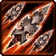
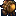
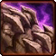
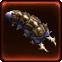

- Stats
- Abilities/Upgrades
- Strategy
- Lore
- Related
Armor: 1
 25/200 0.5625 per second
25/200 0.5625 per secondName: Claws
Damage: 4
Attacks: 2
Cooldown: 1
Targets: Ground only
Attack Range: 5
-Attack 2-
Name: Acid Spine
Damage: 9
Attacks: 1
Cooldown: 1
Targets: Air only
Attack Range: 7
Requirements: Level 2 requires Lair, level 3 requires Hive
| Level |  Level 1 Level 1 |  Level 2 Level 2 |  Level 3 |
| Minerals |  100 100 | 150 | 200 |
| Vespene Gas |  100 100 | 150 | 200 |
| Time |  160 160 | 190 | 220 |
| Damage Bonus | +1 | +1 | +2 | +2 | +3 | +3 |
| Total Damage | 5 | 10 | 6 | 11 | 7 | 12 |
Speed on Creep: 2.5003125
Acceleration: 1000
Collision Radius: 0.875
150Vespene Cost:
0Supply:  2
Produced From: Hatchery Build Time:
5 0Requirements: Spawning Pool
Requirements: Level 2 requires Lair, level 3 requires Hive
| Level |  Level 1 Level 1 |  Level 2 |  Level 3 Level 3 |
| Minerals | 150 | 225 | 300 |
| Vespene Gas | 150 | 225 | 300 |
| Time | 160 | 190 | 220 |
| Armor Bonus | +1 | +2 | +3 |
| Total Armor | 2 | 3 | 4 |
Overlord Size: 2
Unit Type: Biological, Psionic, Ground
| Icon | Minerals | Vespene Gas | Research Time | Researched At |
|  | 0 | 0 | 0 | Already Researched |
Range: 1
Cooldown:
2.5Duration:
40 25Information: This ability allows the Queen to spend 25 energy and inject a Hatchery/Lair/Hive. 40 seconds after the inject, 4 extra larva spawn from the eggs on the building.
If a Hatchery/Lair/Hive has more than 19 Larva, additional larva from injects will be wasted.
| Icon | Minerals | Vespene Gas | Research Time | Researched At |
| 0 | 0 | 0 | Already Researched |
Range: 1
Radius: 10
Duration:
15 25Information: With this ability a Queen can spawn a Creep Tumor where creep already exists. The Creep Tumor takes 15 seconds to gestate, and will excrete creep within a radius of 10.
Creep Tumors can be placed anywhere there is creep. This includes but is not limited to Overlord Creep, Hatchery creep, receding creep, or even enemy creep.
| Icon | Minerals | Vespene Gas | Research Time | Researched At |
| 0 | 0 | 0 | Already Researched |
Range: 7
Cooldown:
1 25Information: Transfusion allows the Queen to heal any Biological unit or structure for 125 health.
You are able to heal Zerg buildings with this, as they are considered Biological. You are also allowed to heal non Zerg allied units, assuming they are Biological.
| Icon | Minerals | Vespene Gas | Research Time | Researched At |
| 100 | 100 | 100 | Lair |
Cast Time:
~0.83Information: Upon research of burrow, most Zerg units are given the ability. Burrow times vary from unit to unit.
You need a Lair to purchase burrow, but it can be researched at any Zerg production structure (Hatchery, Lair, or Hive).
Burrowed units are invisible unless a detector comes into range or a spell that reveals burrowed units hits them.
Burrow is useful for setting up traps or flanks against opponents without detection
A Zerg player can Burrow to try and save units that would otherwise not make an escape if the opponent does not have detection.
| Icon | Minerals | Vespene Gas | Research Time | Researched At |
 | 0 | 0 | 0 | Comes with Burrow |
Cast Time:
~1Information: Unburrow is the second part that comes with the research of Burrow. It allows you to bring Burrowed units back up. Unburrow times vary from unit to unit.
If you have any suggestions for more strategies, go ahead and post on the forums 'here'!
+1 Weapons vs Zerglings
When Zealots have a +1 weapon advantage versus Zerglings, they will kill Zerglings in two attacks instead of three. This makes Zealots very effecient against Zerglings until the zerg catches up in armor upgrades.
Because of this, there are a handful of timing attack that take advantage of the effecient +1 weapon zealots, forcing the zerg to make spines, roaches, or some other unit than zerglings unless the zerg wants to trade inefficiently.
+1 Weapons vs Zerglings
Sum text about how gosu this is
+1 Weapons vs Zerglings
Sum text about how gosu this is
- Original Queen
- New/Evolved Queen
The queen was derived from the Arachnis brood-keeper. It possessed numerous tentacles, a sinuous head, and a stretched skin membrane. As with the overlords, queens were subordinated to the cerebrates to help administrate the Swarm. Queens usually stayed near the hives where they oversaw maturing zerg and drone activities.
On the battlefield, one of the queen's primary functions was to implant parasites in its enemies. Able to be launched from a distance, a tiny, remora-like parasite attached itself to the target, 'bonding' with it should the target be organic. The parasite allowed higher zerg strains to see whatever the target sees and at the time of its use in the Koprulu Sector, could not be removed without killing its host. The parasite could also provide a link for the zerg to "talk" to the host.
With the arrival of the United Earth Directorate in the Koprulu Sector however and the introduction of nano-conveyed anesthetic and attenuated laser technology they brought with them, the parasites could be safely removed if detected by medics using the Restoration ability. However, by 2503 at least some parasites could not be detected by terran technology.
The queen could also infest other creatures, causing them to expire and broodlings to emerge from them. It took time for the queen to produce these creatures, though the rate of reproduction was able to be increased through the use of gamete meiosis. In the meantime, the queen was able to spray its victims with a thick mucus, slowing them down drastically before dissolving.
Most feared of the queen's abilities however, was its ability to produce parasitic bio-toxins. Once released onto a structure (usually a terran command center), these toxins quickly infested the facility, bringing the structure and those inside it under the control of the zerg. The only safeguard against this ability was that the structure had to be in a state of disrepair before the toxins can be deployed.
Following the Brood War, a small number of older queens continued to exist.
This breed of queen came into use after the Brood War, observed as early as 2502. Sapient beings and tougher than their predecessors, these queens play a limited command role nurturing zerg nest sites. Their new morphology hints at the incorporation of terran or protoss DNA, or perhaps even the zerg-altered genes of the Queen of Blades herself. Such evolution implies a widespread change occured within the zerg hierarchy, a redistribution of power making them more difficult to combat.
Queens have the advanced ability to manipulate their "offspring"; for instance, by 2503, they engineered the zergling morph to the baneling, a breed that can contain its explosive energies until just the right moment. They have also been tasked with the spawning of numerous cocoons and can lob projectiles at their enemies. In leadership roles, they oversee hives and co-ordinate lesser strains.
Source Information
Text information from the Original Queen Wiki and New Queen Wiki.
Photo 1 created by Saejin Oh. Copyright: UDON Entertainment.
Photo 2 created by Samwise Didier. Copyright: Blizzard Entertainment.
| Zerg |
| Units |
| Hatchery Tech | Drone | Overlord | Queen | Zergling | Baneling | Roach |
| Lair Tech | Overseer | Hydralisk | Mutalisk | Corruptor | Infestor |
| Hive Tech | Ultralisk | Broodlord |
| Spawned Units | Larva | Changeling | Infested Terran | Broodling |
| Structures |
| Hatchery Buildings | Extractor | Spawning Pool | Baneling Nest | Roach Warren | Evolution Chamber |
| Lair Buildings | Hydralisk Den | Spire | Infestation Pit | Nydus Network |
| Hive Buildings | Ultralisk Cavern | Greater Spire |
| Defensive Buildings | Spine Crawler | Spore Crawler | Creep Tumor | Nydus Worm |